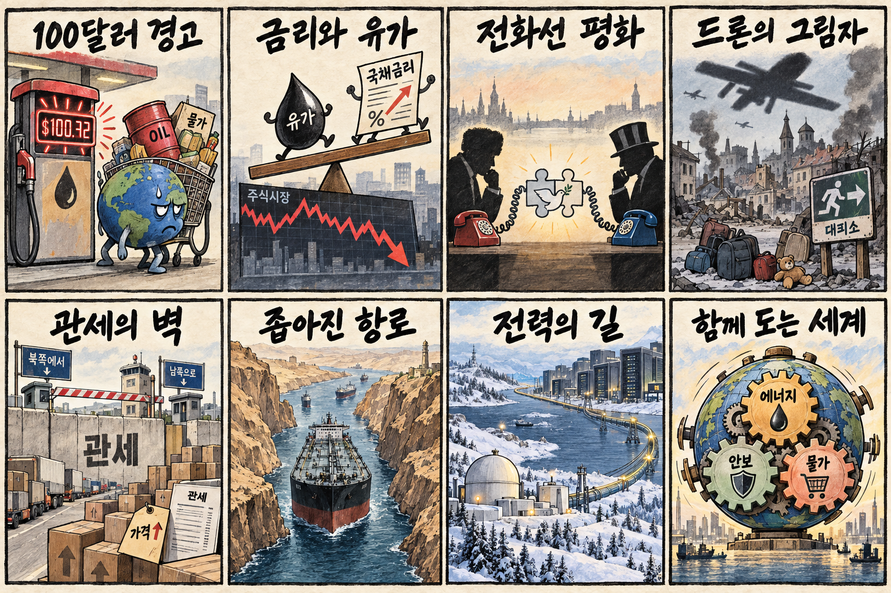
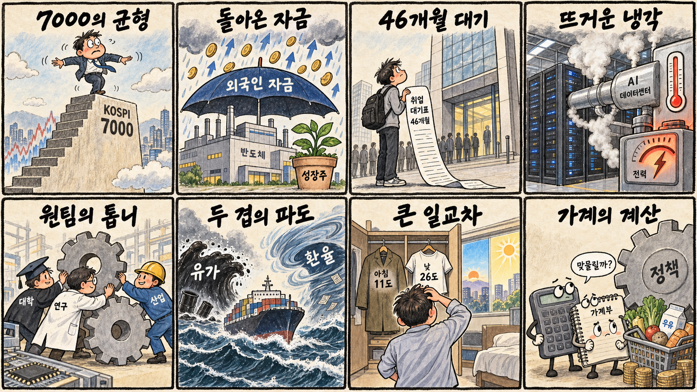

01
마벨 · 223.74→235.01달러 · +5.03%
내용요약 시가 대비 5.03% 상승해 AI·데이터 인프라 반도체의 상대 강세를 보였습니다.
예상여파 국내 관련주는 고객·제품 노출이 다르므로 미국 주가만으로 매수 연결하지 말고 시초가 수급을 확인해야 합니다.
MORNING_BRIEFING_20260910
작성 시각: 2026-09-10 06:41 KST · 직전 미국 정규장과 2026-09-10 KST 당일 공개 기사 기준
직전 미국 정규장인 9월 9일 뉴욕증시는 국제유가 100달러 돌파와 국채금리 상승 부담으로 동반 하락했습니다. 다우 -0.77%, S&P 500 -0.48%, 나스닥 -0.64%로 마감했습니다. 반도체 안에서는 마벨·인텔·마이크론·AMD가 상대 강세를 보인 반면 암호자산 연동주는 크게 밀려 한국 증시에서도 업종·종목별 차별화가 예상됩니다.
| 지수 | 종가 | 등락률 | 한국 증시 시사점 |
|---|---|---|---|
| 다우존스 | 52,380.66 | -0.77% | 유가·금리 부담 속 업종 선별 |
| S&P 500 | 7,636.36 | -0.48% | 유가·금리 부담 속 업종 선별 |
| 나스닥 종합 | 26,253.34 | -0.64% | 유가·금리 부담 속 업종 선별 |
중동 위험이 물가와 금리 부담을 동시에 밀어 올렸습니다.
나스닥 -0.64%로 성장주 할인율 부담이 이어졌습니다.
구글의 핀란드 투자와 원전 전력 구매가 병목을 보여줍니다.
필수 수급·컨센서스·보정 표본 문턱을 모두 통과한 후보가 없습니다.
9월 9일 보고서는 유가 급등과 미국 증시 약세, 필수 수급·컨센서스 및 30건 이상 보정 표본 부족으로 공식 추천을 내지 않았습니다. 게시 당시 판단은 유지하며 사후 종목을 추가하지 않습니다.
| 시장 | 종가 | 등락률 | 기준 |
|---|---|---|---|
| KOSPI | 7,051.64 | +1.40% | 9월 9일 · 시가 대비 +1.13% |
| KOSDAQ | 830.37 | +2.28% | 9월 9일 · 시가 대비 +1.88% |
| 다우존스 | 52,380.66 | -0.77% | 미국 9월 9일 정규장 |
| S&P 500 | 7,636.36 | -0.48% | 미국 9월 9일 정규장 |
| 나스닥 종합 | 26,253.34 | -0.64% | 미국 9월 9일 정규장 |
마벨·인텔·마이크론·AMD가 하락장에서도 시가 대비 상승했습니다.
유가 100달러 돌파가 정유·에너지 가격 모멘텀을 지지합니다.
마이크로스트래티지와 코인베이스가 시가 대비 큰 폭 하락했습니다.
연료·원재료 비용과 금리 상승이 마진 부담으로 이어질 수 있습니다.
내용요약 시가 대비 5.03% 상승해 AI·데이터 인프라 반도체의 상대 강세를 보였습니다.
예상여파 국내 관련주는 고객·제품 노출이 다르므로 미국 주가만으로 매수 연결하지 말고 시초가 수급을 확인해야 합니다.
내용요약 시가 대비 3.31% 올라 하락장 속 반도체 강세군에 포함됐습니다.
예상여파 파운드리·정책 기대는 장비와 소재 심리에 우호적일 수 있으나 실제 주문과 공정 일정을 구분해야 합니다.
내용요약 시가 대비 2.84% 상승하며 메모리 반도체 투자심리를 지지했습니다.
예상여파 국내 메모리 대형주에는 단기 우호적이지만 최근 급등 뒤 과열과 외국인 수급을 우선 점검해야 합니다.
내용요약 시가 대비 6.53% 하락해 조사 종목 중 낙폭이 가장 컸습니다.
예상여파 암호자산 가격 민감도가 높은 종목의 변동성 확대는 국내 가상자산 연동주에도 경계 신호입니다.
내용요약 시가 대비 5.19% 하락하며 암호자산 거래 플랫폼의 위험회피 흐름을 반영했습니다.
예상여파 국내 관련 테마는 펀더멘털보다 심리에 흔들릴 수 있어 갭 하락·반등 추격을 피해야 합니다.
미국 3대 지수 하락과 유가 100달러 돌파는 국내 증시의 추가 상승에 부담입니다. 다만 전일 KOSPI는 7,051.64로 7,000선을 회복했고 시가 대비 +1.13%, KOSDAQ은 +1.88% 상승해 내부 모멘텀은 강했습니다. 메모리·일부 AI 반도체의 미국 상대 강세는 우호적이지만 최근 급등한 국내 대형 반도체는 시초가 추격보다 외국인 선물·현물 동반 순매수와 전일 고점 지지 여부를 확인해야 합니다. 정유·에너지는 유가 수혜, 항공·운송·화학은 비용 부담으로 차별화될 수 있습니다.
오늘은 추천 없음 — 현금 관망
전일까지의 외국인·기관 수급, 컨센서스 변화, 30건 이상 유사 조건 확률 보정과 예상 손익비 1.5 이상을 동시에 검증한 국내 종목이 없습니다. 장전 시가가 형성되지 않은 상태에서 점수와 상승확률을 임의로 만들지 않습니다.
관심 연결종목 메모리·AI 데이터 인프라, 정유·에너지, 원전·전력망은 관찰 대상일 뿐 매수 추천이 아닙니다. 최근 급등 또는 유가 뉴스로 과도한 갭이 발생하면 추격매수 금지입니다.
KOSPI 7,000선과 외국인 선물·현물 동반 수급을 확인합니다.
중동 충돌과 공급 불안이 유가·환율·채권금리에 이어지는지 봅니다.
마벨·메모리 강세가 국내 대형주와 장비주로 이어지는지 점검합니다.
긍정적 평가가 실제 휴전 조건과 후속 회담으로 구체화되는지 확인합니다.
핵심 요약: AI 인프라는 퀄컴·AWS 계약과 구글의 핀란드 투자로 확장되는 한편 전력·냉각·입지 규칙이 병목으로 부상했습니다. 모델 안전과 로봇 성능 표준도 산업 확산의 신뢰 기반을 좌우합니다.
내용요약 AI 데이터센터 특별법 시행을 앞두고 데이터센터 전력·입지 지원의 남용을 막을 세부 시행령과 부처 공조가 쟁점이라는 당일 보도입니다.
예상여파 지원 속도와 전력망·환경 기준의 균형에 따라 국내 데이터센터 투자 일정과 지역 수용성이 달라질 수 있습니다.
내용요약 퀄컴이 AWS와 4조원대 규모의 다세대 AI 데이터센터 계약을 체결했다는 당일 보도입니다.
예상여파 AI 가속기 공급망 다변화는 설계·파운드리·패키징 수요를 넓힐 수 있지만 실제 양산 일정과 매출 인식이 핵심입니다.
내용요약 앤트로픽 연구원이 AI의 위험한 발전 경로를 경고하며 통제와 안전 연구의 필요성을 강조했다는 당일 보도입니다.
예상여파 고성능 모델 배포 기준과 안전 평가가 강화되면 개발비와 출시 주기에 영향을 주고 AI 거버넌스 시장은 커질 수 있습니다.
내용요약 구글이 핀란드 디지털 인프라에 약 20조원을 투자하고 원전 전력을 장기 구매한다는 당일 보도입니다.
예상여파 AI 데이터센터의 전력 확보 경쟁이 원전·송전망·냉각 설비의 장기 계약 확대로 이어질 가능성이 큽니다.
내용요약 Arm이 로봇 시스템의 성능을 정의하고 비교할 공통 기준 마련에 나섰다는 당일 보도입니다.
예상여파 표준화가 진전되면 로봇 도입의 성능 검증과 조달이 쉬워지지만 특정 벤치마크 쏠림도 경계해야 합니다.
핵심 요약: 유가 100달러 돌파가 물가·금리·주식에 동시에 부담을 주는 가운데 우크라이나 공습과 미·러 대화가 교차합니다. 북미 관세 갈등과 영국·이스라엘 외교 마찰도 공급망과 지정학 위험을 높입니다.
내용요약 러시아군 공습으로 우크라이나 여러 지역에서 민간인 최소 5명이 숨졌다고 VOA가 당일 전했습니다.
예상여파 민간 피해 확대는 휴전 협상의 난도를 높이고 유럽 안보·에너지 위험 프리미엄을 다시 자극할 수 있습니다.
내용요약 미국과 러시아 정상이 전화로 우크라이나 전쟁 종식 문제를 논의했고 미국 측이 대화를 긍정적으로 평가했다는 당일 보도입니다.
예상여파 후속 회담과 구체적 휴전 조건이 확인되기 전까지 외교 기대와 현장 교전 위험이 동시에 시장에 반영될 수 있습니다.
내용요약 캐나다의 보복관세에 미국이 추가 수입금지 가능성을 꺼내며 통상 갈등이 격화됐다는 당일 보도입니다.
예상여파 북미 공급망에 얽힌 자동차·원자재·소비재의 비용과 기업 투자 불확실성이 커질 수 있습니다.
내용요약 중동 충돌 격화로 국제유가가 한 달 만에 배럴당 100달러를 다시 넘어섰다는 당일 보도입니다.
예상여파 에너지 기업에는 가격 모멘텀이지만 운송·화학·소비와 인플레이션, 금리 경로에는 부담입니다.
내용요약 정착촌 제재와 외교 시설 문제를 둘러싼 영국과 이스라엘 관계가 수십 년 만의 저점으로 향한다는 당일 분석입니다.
예상여파 서방 내부의 대중동 정책 균열이 제재·외교 조치로 번지면 지정학적 불확실성이 장기화될 수 있습니다.

핵심 요약: KOSPI 7,000선 회복 뒤 수급 지속성이 핵심입니다. 반도체 협업과 지역개발 정책은 중장기 과제인 반면 청년 고용 감소와 큰 일교차는 체감경제와 일상의 부담으로 남았습니다.
내용요약 코스피가 9월 9일 7,000선을 회복한 흐름과 향후 추가 상승 가능성을 다룬 당일 기사입니다.
예상여파 지수 수준보다 외국인·기관 수급의 지속성과 대형 반도체 쏠림, 장중 변동성을 함께 점검해야 합니다.
내용요약 글로벌 반도체 경쟁이 격화되는 시점에 기업·정부·학계가 협업하는 K반도체 원팀 전략의 골든타임을 강조한 당일 기고입니다.
예상여파 인력·세제·전력·소부장 정책의 실행 속도가 첨단공정 투자와 공급망 경쟁력에 영향을 줄 수 있습니다.
내용요약 청년 취업자가 46개월 연속 감소해 전체 고용률 개선과 체감 고용 사이의 간극이 커졌다는 당일 사설입니다.
예상여파 청년 소득과 소비 회복이 늦어질 수 있어 일자리의 수뿐 아니라 산업 전환 교육과 고용의 질이 중요해집니다.
내용요약 국토교통부가 OECD와 함께 한국형 지역개발 해법을 모색한다는 당일 보도입니다.
예상여파 생활권·교통·일자리 연계가 구체화되면 지역 인프라 투자와 균형발전 사업의 우선순위가 재조정될 수 있습니다.
내용요약 전국 아침 최저기온이 11도까지 떨어지고 낮에는 기온이 오르며 일교차가 15도 안팎으로 벌어진다는 당일 예보입니다.
예상여파 출근길 겉옷과 건강 관리가 필요하며 남부·제주 강풍 지역은 시설물과 해상 이동 안전에 유의해야 합니다.
